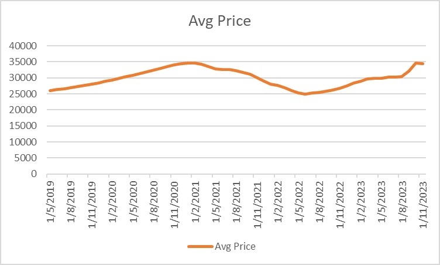

有不少打手X我提倡大眾月供比特幣在害人；亦有不少hates inbox指他們月供比特幣輸錢云云。
很多人之所以很容易被騙，是因為他們只懂人云亦云，完全沒有求真的心，完全不懂fact check。例如財演說月供2800及公用股很賺錢，一大群人就衝去月供2800及所謂的「收息股」。真相往往相反，月供2800及公用股都落得慘輸的下場。
月供比特幣輸錢？
我看了看自己倉位，好奇為什麼我在賺錢，是我的帳戶天賦異稟嗎？
做量化不能馬虎，凡事都需要驗證。於是我拿來了4年比特幣歷史數據。
為什麼是4年？因為我在2019年中開始公開提及比特幣，包括ViuTV、專欄如經濟一周，以及Facebook post。當時比特幣仍為4位數美元，如果當時all in，至今已是5-6倍。當然，我不提倡all in，更提倡的是，DCA，即Dollar Cost Averaging，即定時定額法，即平均成本法。
DCA已被我提及n次，頻率可以是月、可以是周、可以是日，任君選擇。不過，最多人喜愛的，都是月供，即每月買入固定金額。金額亦是任君選擇，可以是$5000、$10000、$20000或更多，純粹看你有多少閒錢。
一起來看看結果。
上圖顯示的是，從不同時間點開始月供比特幣至今的回報。如果從2019年中就開始月供，回報為35%；如果從2022年6月，即UST爆炸後開始月供，回報為40%以上。最差的是，在2021年第一季開始月供，回報仍為正數，但只有單位數。
因此，你會發現，無論從任何時候開始月供比特幣，你都是賺的！只是賺多賺少的差別，而且平均有2成或以上的回報！
何來月供比特幣虧很多？我和haters活在不同宇宙中嗎？
再來看看圖二。
圖二顯示的是，從不同時間點開始月供比特幣的年回報。年回報最低的，同樣是在2021年第一季開始月供的那一批。由於總回報低，年回報也低。相反，最高年回報的是早幾個月開始月供的人，年回報達60%！
眾多數據點的平均值為16%。月供2800負回報，香港放租回報2.5%，銀行存款年回報現在才4%，長期月供美股平均年回報為7-8%，請問有什麼資產月供年回報可以達16%？況且這個數字被低估，若只計2021年開始月供的data points，平均月供年回報為22%。
最後，請看圖三。

圖三顯示的是，從不同時間點開始月供比特幣的均價。大致上都是在25000至35000美元。因此，我真不明白，為什麼有人說他乖乖DCA比特幣會「輸到仆街」；也許他一直都在JPEX中進行月供吧。
謹記，謠言可以騙到傻散，但騙不了懂得求真的人。
後記：
我最推薦大家學量化交易、自動交易；
真沒時間學就只好DCA吧。